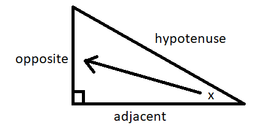
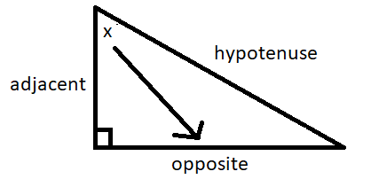

Ready to Learn Trigonometry?!
Practice the basics of sine, cosine, and tangent to solve equations.
Where x is an acute angle in a right triangle:
sin(x) =
It is common to use the following phrase to remember the ratios for each trig function:
sin(x) =
opposite
hypotenuse
cos(x) =
adjacent
hypotenuse
tan(x) =
opposite
adjacent
It is common to use the following phrase to remember the ratios for each trig function:
SohCahToa
(S = "sine," C = "cosine," T = "tangent", o = "opposite," a = "adjacent," and h = "hypotenuse")
Choose to review "identfying the sides of a triagnle" or skip right to some problems:
1) The "hypotenuse" will ALWAYS be the side across from the right angle.
The "opposite" and "adjacent" sides will change depending on the orientation of your triangle.
2) Idenitfy the "opposite" side first using one of the following ideas:
The other way to think of "adjacent" is with the word touching. Technically, two sides will touch the given angle. However, since one side must already be the "hypotenuse," the second side touching the angle must be the "adjacent" side.
The "opposite" and "adjacent" sides will change depending on the orientation of your triangle.
2) Idenitfy the "opposite" side first using one of the following ideas:
- Think of an imaginary arrow stretching from the given angle across the triangle (as seen in the pictures below). The side you point to is the "opposite" side.
- The "opposite" side will always be the only side that DOES NOT touch the given angle.
The other way to think of "adjacent" is with the word touching. Technically, two sides will touch the given angle. However, since one side must already be the "hypotenuse," the second side touching the angle must be the "adjacent" side.

